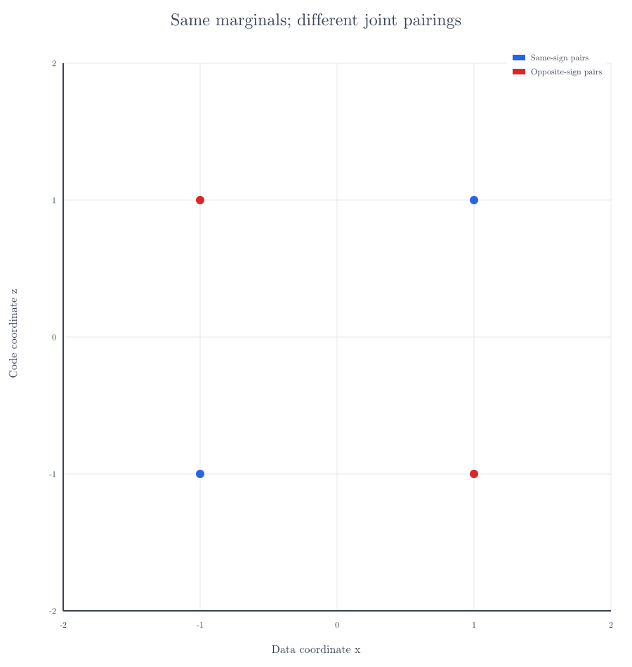
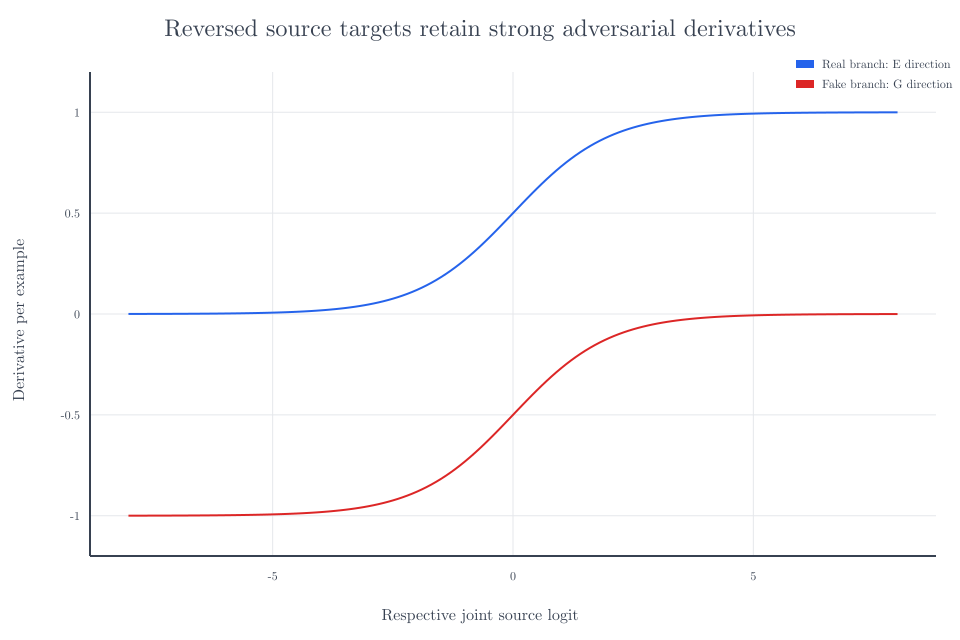
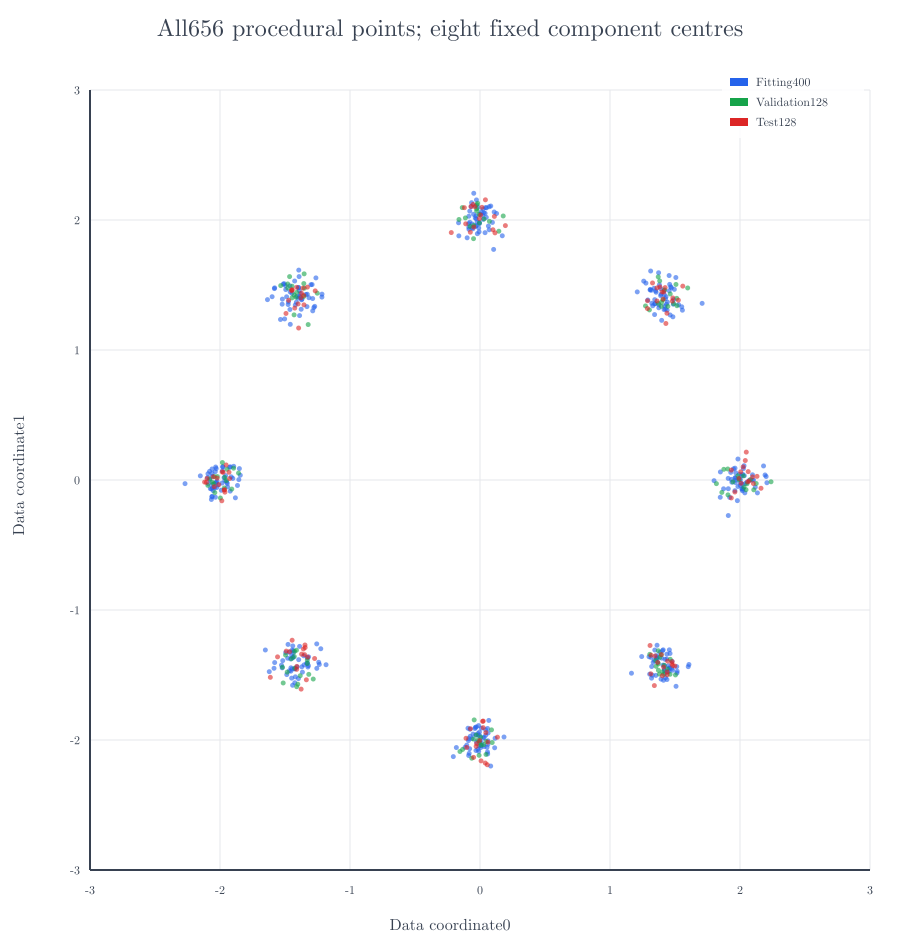
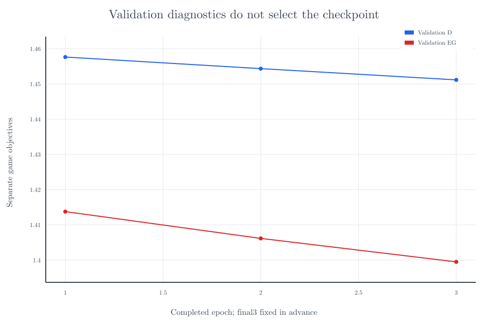
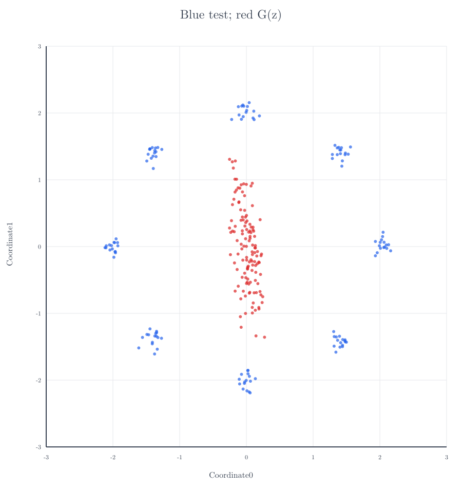
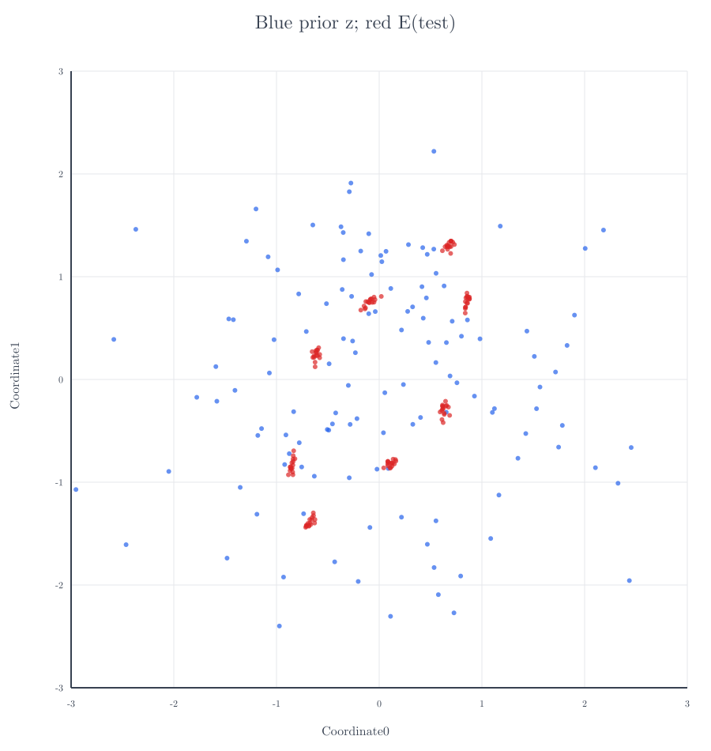
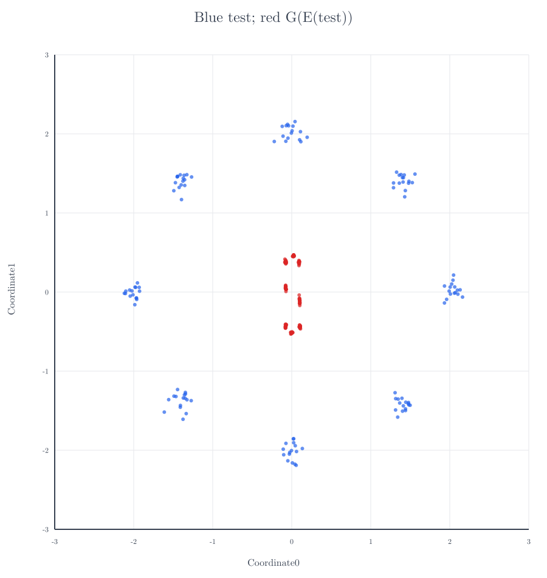
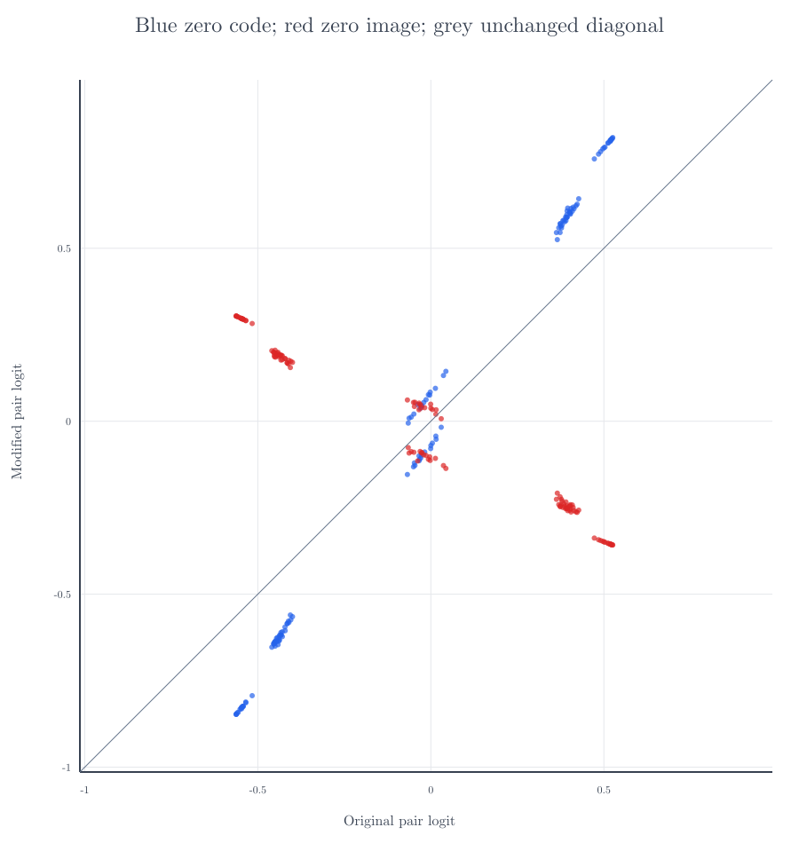
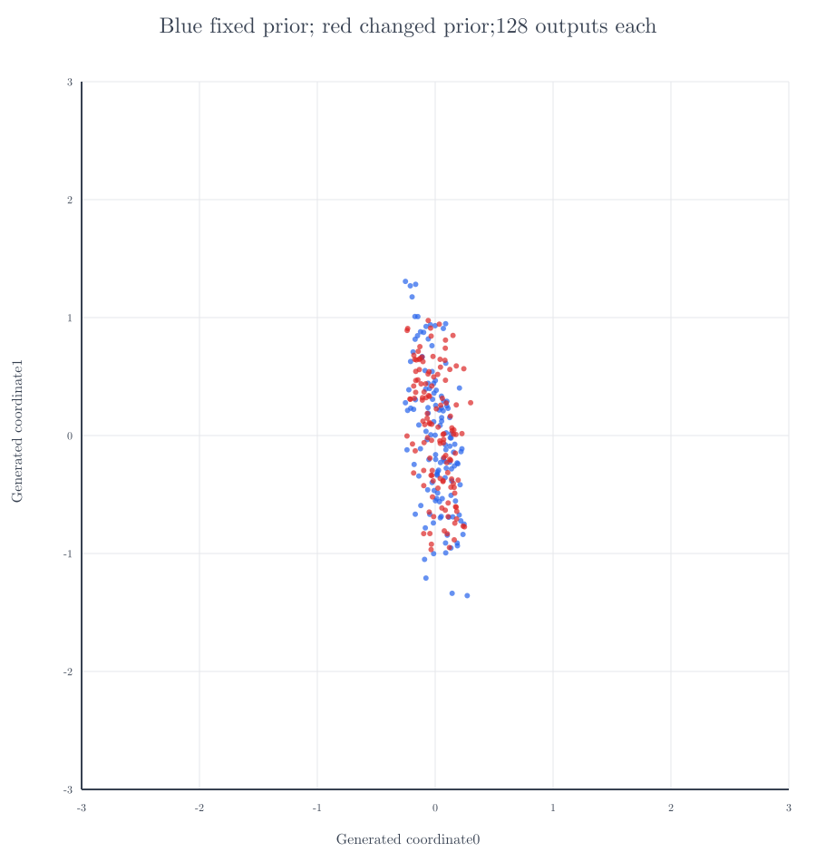

BiGAN: Joint Pairs Without a Reconstruction Loss
Abstract
A small bidirectional GAN fits 400 points from an ordered eight-component Gaussian ring. A generator maps a two-dimensional Gaussian prior into data coordinates, an encoder maps data back to code, and a joint discriminator scores(data,E(data)) against(G(prior),prior). Three independent Adam states perform D, then E, then G writes with a fresh forward after each update: 39 writes per store and 117 updates, ending at the fixed third epoch. Reconstruction and latent-cycle paths are diagnostics, with no residual term in fitting. The short run fails to learn a useful inverse: held-out reconstruction MSE 2.1331 exceeds the fitting-mean predictor's 2.0098; latent-cycle MSE is 1.2355. Native components, complete editable orchestration, exact checkpoints, joint-pair controls and independent numerical checks preserve that weak result rather than claiming convergence or learned invertibility.
The discriminator sees a pair, not only a point
G receives a prior code z and produces data coordinates. E receives a data point x and produces code coordinates. D distinguishes the ordered pairs (x,E(x)) and (G(z),z). Both halves enter D, data first, then code. A real/fake source label appears only in the loss; there is no supervised class label or reconstruction target in D's forward. The two occurrences of each network share parameters.
This compact deterministic MLP follows the repository's teaching program. It uses the joint-pair idea of [Donahue, Krähenbühl and Darrell](https://arxiv.org/abs/1605.09782) and [Dumoulin et al.](https://arxiv.org/abs/1606.00704), with the source's alternating D–E–G writes. Donahue et al.'s practical protocol also discusses simultaneous updates; this experiment retains its own explicit schedule and small architecture.
#include <dm/dm.hpp>
int main() {
std::filesystem::create_directories("build");
dm::graphics::Diagram d(52, 1250);
dm::graphics::DiagramNodeStyle s;
s.width = 7.2;
s.height = 2.8;
s.font_size = 18;
d.node("x", {-12, 5}, "Data x\n400 fitting points", s)
.node("e", {-2, 5}, "E: tanh16 → linear2\nFour leaves /82 values", s)
.node("real", {8, 5}, "Pair (x,E(x))\nData then code", s)
.node("dr", {18, 5}, "Shared joint D\nRaw source logit", s)
.node("z", {-12, -4}, "Explicit prior z2\nSeeded Gaussian bank", s)
.node("g", {-2, -4}, "G: tanh16 → linear2\nFour leaves /82 values", s)
.node("fake", {8, -4}, "Pair (G(z),z)\nData then code", s)
.node("df", {18, -4}, "Same joint D\nFour leaves /97 values", s)
.edge("x", "e")
.edge("e", "real")
.edge("real", "dr")
.edge("z", "g")
.edge("g", "fake")
.edge("fake", "df")
.text(
{3, -9},
"The unchanged x and z also enter their pair boxes; no reconstruction residual is "
"fitted.",
18)
.save_svg("build/bigan_method.svg");
}
Ordered centres make the synthetic source hand-checkable
For row i, component k=i modulo K has angle 2πk/K. Its two coordinates are r(cosθ,sinθ)+σ ε_i, with explicit independent Gaussian coordinates. Setting K=4, r=2 and σ=0 gives centres (2,0),(0,2),(-2,0),(0,-2), up to trigonometric rounding. Components cycle deterministically; a remainder goes to the earliest components. The native generator uses the existing seeded Double Gaussian stream, computes centres and addition in Double, then performs one final Float32/64 cast. It does not shuffle, choose components randomly or consume global RNG state. No downloaded data are needed.
#include <dm/dm.hpp>
int main() {
namespace n = dm::nn;
const auto points = n::models::GaussianRingPoints(4, 5507, 4, 2, 0, n::DType::Float64);
std::print("Four ordered centres: {}.\n", points.values_str());
auto p = dm::graphics::RPlot::create();
p.size(900, 950)
.margins(90, 30, 90, 80)
.points(
n::select(points, 1, 0).to_vector<double>(),
n::select(points, 1, 1).to_vector<double>(),
"Four centres",
{37, 99, 235},
6.)
.x_limits(-3, 3)
.y_limits(-3, 3)
.x_label("Coordinate0")
.y_label("Coordinate1")
.title("Four explicit zero-noise ring centres")
.save_svg("build/bigan_toy_ring.svg");
}Four ordered centres: [[2, 0], [1.22465e-16, 2], [-2, 2.44929e-16], [-3.67394e-16, -2]].

Equal marginals need not mean equal joint pairs
Pairs (-1,-1),(1,1) and(-1,1),(1,-1) have identical data and code marginals: each coordinate takes -1 and 1 equally often. Their pairings differ completely. A discriminator that sees only one coordinate cannot distinguish these two empirical sources. A joint nonlinear discriminator can use their relation. This small geometric example explains the input concatenation; it is not a claim that the random initialized D has learned it.
#include <dm/dm.hpp>
int main() {
auto p = dm::graphics::RPlot::create();
p.size(900, 950)
.margins(90, 30, 90, 80)
.points({-1, 1}, {-1, 1}, "Same-sign pairs", {37, 99, 235}, 6.)
.points({-1, 1}, {1, -1}, "Opposite-sign pairs", {220, 38, 38}, 6.)
.x_limits(-2, 2)
.y_limits(-2, 2)
.x_label("Data coordinate x")
.y_label("Code coordinate z")
.title("Same marginals; different joint pairings")
.save_svg("build/bigan_toy_pairs.svg");
}
Reversing the source targets sends E and G different gradients
Write a=D(x,E(x)) and b=D(G(z),z), as raw logits with positive meaning data/encoded. The source objectives, each using a separate pool mean, are
Here sp is stable softplus. At a=b=0 both losses equal 2log2. The reversed-source objective is the minimized negative of the inverse objective discussed in [BiGAN Appendix B](https://arxiv.org/html/1605.09782v7) and [ALI section 2.3](https://arxiv.org/html/1606.00704v3). For one pair, its real-branch derivative is σ(a), while its fake-branch derivative is σ(b)-1. At a=80, b=-80 these stay approximately +1 and -1, so E and G retain strong source gradients when D confidently distinguishes the two sources.
With D fixed, the real branch depends on E and the fake branch on G. Updating E therefore leaves the partial derivative of L_EG with respect to G unchanged. D's write can change both partials. The source explicitly recomputes all three phases anyway. Neither G(E(x))-x nor E(G(z))-z appears in these fitting objectives.
#include <dm/dm.hpp>
int main() {
namespace n = dm::nn;
std::vector<double> x, e, g;
for (int k = -80; k <= 80; ++k) {
x.push_back(k / 10.);
auto a = n::full({1, 1}, k / 10., n::DType::Float64).requires_grad_(),
b = n::full({1, 1}, k / 10., n::DType::Float64).requires_grad_();
auto source = n::models::LogisticGanObjectives(a, b);
auto eg = n::mean(n::softplus(a)) + source.generator;
auto derivatives = n::grad(eg, {a, b});
e.push_back(derivatives[0].item());
g.push_back(derivatives[1].item());
}
auto p = dm::graphics::RPlot::create();
p.lines(x, e, "Real branch: E direction", {37, 99, 235}, 2.)
.lines(x, g, "Fake branch: G direction", {220, 38, 38}, 2.)
.x_label("Respective joint source logit")
.y_label("Derivative per example")
.title("Reversed source targets retain strong adversarial derivatives")
.save_svg("build/bigan_source_gradients.svg");
auto a = n::full({1, 1}, 80.).requires_grad_(), b = n::full({1, 1}, -80.).requires_grad_();
auto source = n::models::LogisticGanObjectives(a, b);
auto loss = n::mean(n::softplus(a)) + source.generator;
const auto derivatives = n::grad(loss, {a, b});
std::print(
"Float32 at a80,b-80: EG loss={:.6f}; derivatives={},{}.\n",
loss.item(),
derivatives[0].item(),
derivatives[1].item());
}Float32 at a80,b-80: EG loss=160.000000; derivatives=1,-1.

Three procedural pools and three small networks
Fitting uses 400 ring points with seed 5507; validation/test each 128 use 5519/5521. Every pool cycles through eight components equally. Gaussian prior banks use 6043 for validation and 6047 for test. The initial test forward is archived as a diagnostic control; test outcomes never choose updates, epochs, hyperparameters or checkpoint weights. The fixed schedule uses final epoch 3; no validation score selects an epoch.
| Store | Mapping and creation order | Leaves | Scalars |
|---|---|---|---|
| G, seed 6007 | prior2 → tanh16 → linear data2; hidden then output W,b | 4 | 82 |
| E, seed 6011 | data2 → tanh16 → linear code2; hidden then output W,b | 4 | 82 |
| D, seed 6029 | concat(data2,code2) → tanh16 → raw source1; hidden then output W,b | 4 | 97 |
| Total | Three independent parameter stores | 12 | 261 |
The canonical tanh/linear map implementation is reused for all three networks; no sigmoid bounds the coordinates. The public forward also accepts positive unequal real/prior pool sizes and inferred differing coordinate widths. The frozen experiment keeps both widths at 2 and all computations Float32.
#include <dm/dm.hpp>
int main() {
namespace n = dm::nn;
auto p = dm::graphics::RPlot::create();
p.size(900, 950).margins(90, 30, 90, 80);
for (int k = 0; k < 3; ++k) {
auto points = n::models::GaussianRingPoints(
k == 0 ? 400 : 128,
k == 0 ? 5507
: k == 1 ? 5519
: 5521);
p.points(
n::select(points, 1, 0).to_vector<double>(),
n::select(points, 1, 1).to_vector<double>(),
k == 0 ? "Fitting400"
: k == 1 ? "Validation128"
: "Test128",
k == 0 ? dm::RGB{37, 99, 235, .6}
: k == 1 ? dm::RGB{22, 163, 74, .6}
: dm::RGB{220, 38, 38, .6},
2.5);
}
p.x_limits(-3, 3)
.y_limits(-3, 3)
.x_label("Data coordinate0")
.y_label("Data coordinate1")
.title("All656 procedural points; eight fixed component centres")
.save_svg("build/bigan_pools.svg");
std::print(
"| pool | rows | each component | seed |\n|---|---:|---:|---:|\n| fit |400|50|5507|\n| "
"validation |128|16|5519|\n| test |128|16|5521|\n");
}| pool | rows | each component | seed |
|---|---|---|---|
| fit | 400 | 50 | 5507 |
| validation | 128 | 16 | 5519 |
| test | 128 | 16 | 5521 |

Complete experiment: D, then E, then G with independent Adam states
Each optimizer uses learning rate .0002,β1=.5,β2=.999,ε=1e-8. BatchOrder(400,32,6089) provides twelve 32-row minibatches plus a 16-row tail per epoch. Training noise seeds are 6068,6069,6070. Every phase recomputes after the preceding write and selects only its own parameter store. Each store receives 39 updates; all 117 writes and 1200 fitting-row visits are visible below. The first batch checks that E's write leaves G's partial bit exact with D fixed, and saves all82 G derivative values after the first D write.
The full editable program includes native procedural preparation, every fitting update, checkpoint restore, standalone generation/encoding, joint-pair controls and immutable inference. There is no legacy example helper or bundled optimizer runner. Archives retain original group prefixes0/G,1/E,2/D. Native annotated scatter plots replace the old manually rasterized PNG presentation; the arrays, fixed [-3,3] windows and outside counts are preserved.
#include <dm/dm.hpp>
namespace nn = dm::nn;
namespace m = nn::models;
using Arrays = std::map<std::string, nn::Tensor>;
using nn::Tensor;
namespace {
void Require(bool condition, const std::string& message) {
if (!condition)
throw std::runtime_error(message);
}
void SaveArrays(const std::string& path, const Arrays& arrays) {
nn::save_npz(path, nn::NamedTensors(arrays.begin(), arrays.end()));
}
bool Equal(const Tensor& a, const Tensor& b) {
return nn::equal_bits(a, b);
}
bool Equal(const Arrays& a, const Arrays& b) {
if (a.size() != b.size())
return false;
for (const auto& [name, value] : a)
if (!b.count(name) || !Equal(value, b.at(name)))
return false;
return true;
}
double MaxAbsDiff(const Tensor& a, const Tensor& b) {
return nn::max(nn::abs(nn::cast(a, nn::DType::Float64) - nn::cast(b, nn::DType::Float64))).item();
}
Arrays Fields(const m::BiganOutput& o) {
return {
{"fake", o.fake},
{"encoded", o.encoded},
{"real_score", o.real_score},
{"fake_score", o.fake_score},
{"discriminator_loss", o.discriminator_loss},
{"eg_loss", o.eg_loss},
{"reconstruction", o.reconstruction},
{"latent_cycle", o.latent_cycle}};
}
double Value(const Arrays& a, const std::string& key) {
return a.at(key).item();
}
Tensor Gaussian2(std::int64_t n, std::uint32_t seed) {
return nn::cast(m::GaussianNoise({n, 2}, 1, seed).reshape({n, 2}), nn::DType::Float32);
}
/// tflow Points: ring of eight Gaussians (class i % 8), radius 2, sd .08.
// Native plot rendering replaces the old hand-drawn PNG pixels; all points are retained.
int Plot(std::filesystem::path path, const Tensor& real, const Tensor& mapped) {
int outside = 0;
for (const auto& points : {real, mapped}) {
const auto values = points.to_vector<double>();
for (std::size_t k = 0; k < values.size(); k += 2)
outside += std::abs(values[k]) > 3 || std::abs(values[k + 1]) > 3;
}
auto p = dm::graphics::RPlot::create();
p.size(900, 950)
.margins(90, 30, 90, 80)
.points(
nn::select(real, 1, 0).to_vector<double>(),
nn::select(real, 1, 1).to_vector<double>(),
"",
{37, 99, 235, .7},
3.)
.points(
nn::select(mapped, 1, 0).to_vector<double>(),
nn::select(mapped, 1, 1).to_vector<double>(),
"",
{220, 38, 38, .7},
3.)
.x_limits(-3, 3)
.y_limits(-3, 3)
.x_label("Coordinate0")
.y_label("Coordinate1")
.title(
path.stem() == "encoded" ? "Blue prior z; red E(test)"
: path.stem() == "reconstruction" ? "Blue test; red G(E(test))"
: "Blue test; red G(z)");
p.save_png(path.string());
path.replace_extension(".svg");
p.save_svg(path.string());
return outside;
}
} // namespace
int main() {
const std::filesystem::path root = "build/bigan";
const int epochs = 3;
std::filesystem::create_directories(root);
const Tensor fit = m::GaussianRingPoints(400, 5507),
validation = m::GaussianRingPoints(128, 5519),
test = m::GaussianRingPoints(128, 5521);
const Tensor vz = Gaussian2(128, 6043), tz = Gaussian2(128, 6047);
SaveArrays(
(root / "data.npz").string(), {{"fit", fit}, {"validation", validation}, {"test", test}});
SaveArrays((root / "fixed_noise.npz").string(), {{"validation_z", vz}, {"test_z", tz}});
nn::ParameterStore g(6007), e(6011), d(6029);
std::vector<nn::ParameterStore*> stores{&g, &e, &d};
{
nn::NoGradGuard guard;
m::BidirectionalGan(g, e, d, nn::zeros({1, 2}), nn::zeros({1, 2}));
}
auto snapshot = [&]() {
Arrays out;
for (int k = 0; k < 3; ++k)
for (const auto& name : stores[k]->names())
out.emplace(std::to_string(k) + "/" + name, stores[k]->at(name).detach().clone());
return out;
};
auto forward = [&](const Tensor& x, const Tensor& z) {
return Fields(m::BidirectionalGan(g, e, d, x, z));
};
auto evaluate = [&](const Tensor& x, const Tensor& z) {
nn::NoGradGuard guard;
return forward(x, z);
};
auto named_g = [&](const Tensor& x, const Tensor& z) {
Arrays out;
const auto gradients = nn::grad(forward(x, z).at("eg_loss"), g.parameters());
const auto names = g.names();
for (std::size_t k = 0; k < names.size(); ++k)
out.emplace("0/" + names[k], gradients[k]);
return out;
};
nn::OptimizerConfig config;
config.kind = nn::OptimizerKind::Adam;
config.beta1 = .5;
config.beta2 = .999;
config.epsilon = 1e-8;
nn::Optimizer go(g, .0002, config), eo(e, .0002, config), disc(d, .0002, config);
std::vector<nn::Optimizer*> optimizers{&go, &eo, &disc};
Require(
g.count() == 82 && e.count() == 82 && d.count() == 97 && g.size() + e.size() + d.size() == 12,
"G 82 / E 82 / joint D 97 = 261 params, 12 tensors");
SaveArrays((root / "initial_arrays.npz").string(), snapshot());
SaveArrays((root / "initial_outputs.npz").string(), evaluate(test, tz));
nn::BatchOrder order(400, 32, 6089);
int steps = 0;
std::ofstream history(root / "history.tsv"), batches(root / "batches.tsv");
history.precision(17);
history << "epoch\tdiscriminator_loss\teg_loss\n";
batches << "epoch\tstep\trow\n";
const auto started = std::chrono::steady_clock::now();
for (int epoch = 1; epoch <= epochs; ++epoch) {
const Tensor noise = Gaussian2(400, 6067 + epoch);
order.begin_epoch();
for (;;) {
const auto rows = order.next();
if (rows.empty())
break;
const Tensor x = nn::take_rows(fit, rows), z = nn::take_rows(noise, rows);
if (!steps)
SaveArrays((root / "first_forward.npz").string(), evaluate(x, z));
Arrays g_gradient_before_e;
for (int group : {2, 1, 0}) {
const auto before = snapshot();
if (!steps && group == 1)
g_gradient_before_e = named_g(x, z);
if (!steps && group == 0) {
Require(
Equal(named_g(x, z), g_gradient_before_e),
"E update leaves G gradient EXACT unchanged: EG blocks independent with D fixed");
SaveArrays((root / "g_gradient_before_e.npz").string(), g_gradient_before_e);
}
// Recompute after each preceding write; select exactly this store.
const auto out = forward(x, z);
const auto derivatives = nn::grad(
out.at(group == 2 ? "discriminator_loss" : "eg_loss"), stores[group]->parameters());
optimizers[group]->step(derivatives);
const auto after = snapshot();
for (const auto& [name, value] : before)
if (name.rfind(std::to_string(group) + "/", 0) != 0)
Require(nn::equal_bits(value, after.at(name)), "unselected store unchanged");
}
for (auto row : rows)
batches << epoch << '\t' << steps << '\t' << row << '\n';
++steps;
}
const auto v = evaluate(validation, vz);
history << epoch << '\t' << Value(v, "discriminator_loss") << '\t' << Value(v, "eg_loss")
<< '\n';
std::cout << "epoch " << epoch << ": D=" << Value(v, "discriminator_loss")
<< ", EG=" << Value(v, "eg_loss") << std::endl;
}
const double seconds =
std::chrono::duration<double>(std::chrono::steady_clock::now() - started).count();
const auto checkpoint = (root / "final.npz").string();
Require(
steps == 39 && go.iterations() == 39 && eo.iterations() == 39 && disc.iterations() == 39,
"117 explicit updates");
SaveArrays(checkpoint, snapshot());
nn::ParameterStore restored_g(1), restored_e(2), restored_d(3);
std::vector<nn::ParameterStore*> restored{&restored_g, &restored_e, &restored_d};
{
nn::NoGradGuard guard;
m::BidirectionalGan(restored_g, restored_e, restored_d, nn::zeros({1, 2}), nn::zeros({1, 2}));
}
for (const auto& [name, value] : nn::load_npz(checkpoint))
restored.at(name[0] - '0')->set(name.substr(2), value);
auto restored_arrays = [&]() {
Arrays out;
for (int k = 0; k < 3; ++k)
for (const auto& name : restored[k]->names())
out.emplace(std::to_string(k) + "/" + name, restored[k]->at(name).detach().clone());
return out;
};
auto deployed_evaluate = [&](const Tensor& x, const Tensor& z) {
nn::NoGradGuard guard;
return Fields(m::BidirectionalGan(restored_g, restored_e, restored_d, x, z));
};
auto generate = [&](const Tensor& z) {
nn::NoGradGuard guard;
return m::BiganMap(restored_g, z);
};
auto encode = [&](const Tensor& x) {
nn::NoGradGuard guard;
return m::BiganMap(restored_e, x);
};
auto score_pair = [&](const Tensor& x, const Tensor& code) {
nn::NoGradGuard guard;
return m::BiganJointScore(restored_d, x, code);
};
Require(Equal(snapshot(), restored_arrays()), "all 12 vars restore exact");
const auto before = restored_arrays();
const auto output = deployed_evaluate(test, tz);
const Tensor fake = generate(tz), encoded = encode(test);
Require(
Equal(fake, output.at("fake")) && Equal(encoded, output.at("encoded")),
"noise ONLY generation / data ONLY encoding");
const double parity = std::max(
MaxAbsDiff(generate(nn::take_rows(tz, {0})), nn::take_rows(fake, {0})),
MaxAbsDiff(encode(nn::take_rows(test, {0})), nn::take_rows(encoded, {0})));
Require(parity < 2e-6, "both G/E batch parity");
const Tensor changed_z = Gaussian2(128, 6073), changed = generate(changed_z);
Require(!Equal(changed, fake), "G responds to noise");
const Tensor pair = score_pair(test, encoded);
Require(Equal(pair, output.at("real_score")), "joint D pair only parity");
const Tensor zeros = nn::zeros({128, 2});
const Tensor zero_code = score_pair(test, zeros), zero_image = score_pair(zeros, encoded);
const double code_effect = MaxAbsDiff(pair, zero_code),
image_effect = MaxAbsDiff(pair, zero_image);
Require(code_effect > 1e-5 && image_effect > 1e-5, "D uses BOTH joint pair parts");
SaveArrays(
(root / "pair_controls.npz").string(),
{{"pair", pair},
{"zero_code", zero_code},
{"zero_image", zero_image},
{"changed_z", changed_z},
{"changed_fake", changed}});
Require(Equal(before, restored_arrays()), "immutable all G/E/D inference");
SaveArrays((root / "outputs.npz").string(), output);
const int outside_gen = Plot(root / "generated.png", test, fake);
const int outside_latent = Plot(root / "encoded.png", tz, encoded);
const int outside_reconstruction =
Plot(root / "reconstruction.png", test, output.at("reconstruction"));
auto mse = [](const Tensor& a, const Tensor& b) {
return nn::mean(nn::square(nn::cast(a, nn::DType::Float64) - nn::cast(b, nn::DType::Float64)))
.item();
};
const double reconstruction_mse = mse(output.at("reconstruction"), test);
const double latent_mse = mse(output.at("latent_cycle"), tz);
const double mean_mse =
mse(nn::tile(nn::mean(nn::cast(fit, nn::DType::Float64), {0}, true), {128, 1}), test);
std::ofstream meta(root / "metrics.json");
meta.precision(17);
meta << "{\"parameters\":261,\"epochs\":" << epochs << ",\"steps_per_group\":" << steps
<< ",\"optimizer_updates\":" << 3 * steps << ",\"selected_epoch_fixed_final\":" << epochs
<< ",\"test_discriminator_loss\":" << Value(output, "discriminator_loss")
<< ",\"test_eg_loss\":" << Value(output, "eg_loss")
<< ",\"test_reconstruction_mse\":" << reconstruction_mse
<< ",\"test_latent_cycle_mse\":" << latent_mse
<< ",\"fit_mean_reconstruction_mse\":" << mean_mse
<< ",\"joint_code_score_max_effect\":" << code_effect
<< ",\"joint_image_score_max_effect\":" << image_effect
<< ",\"outside_generated\":" << outside_gen << ",\"outside_encoded\":" << outside_latent
<< ",\"outside_reconstruction\":" << outside_reconstruction
<< ",\"single_batch_max_error\":" << parity << ",\"training_seconds\":" << seconds << "}\n";
Require(bool(meta) && bool(history) && bool(batches), "complete BiGAN artifacts");
history.close();
batches.close();
meta.close();
std::cout << "fixed final=" << epochs << ", D/EG=" << Value(output, "discriminator_loss") << "/"
<< Value(output, "eg_loss") << ", untrained reconstruction MSE=" << reconstruction_mse
<< " vs mean=" << mean_mse << ", latent cycle MSE=" << latent_mse
<< "; joint paths/D then E then G/restore/immutable PASS (training " << seconds
<< " s)\nArtifacts: " << root.string() << "\nAll bidirectional_gan checks passed.\n";
std::ifstream input(root / "history.tsv");
std::string header;
std::getline(input, header);
std::vector<double> epochs_axis, d_path, eg_path;
double epoch, dl, eg;
while (input >> epoch >> dl >> eg) {
epochs_axis.push_back(epoch);
d_path.push_back(dl);
eg_path.push_back(eg);
}
auto plot = dm::graphics::RPlot::create();
plot.lines(epochs_axis, d_path, "Validation D", {37, 99, 235}, 2.)
.points(epochs_axis, d_path, "", {37, 99, 235}, 4.)
.lines(epochs_axis, eg_path, "Validation EG", {220, 38, 38}, 2.)
.points(epochs_axis, eg_path, "", {220, 38, 38}, 4.)
.x_label("Completed epoch; final3 fixed in advance")
.y_label("Separate game objectives")
.title("Validation diagnostics do not select the checkpoint")
.save_svg("build/bigan_learning.svg");
}epoch 1: D=1.45763, EG=1.41376 epoch 2: D=1.45435, EG=1.40616 epoch 3: D=1.45116, EG=1.3995 fixed final=3, D/EG=1.4325/1.41495, untrained reconstruction MSE=2.13312 vs mean=2.00977, latent cycle MSE=1.2355; joint paths/D then E then G/restore/immutable PASS (training 0.0192425 s) Artifacts: build/bigan All bidirectional_gan checks passed.

Held-out generation and encoding remain visibly weak
The blue points below are held-out data; red points are G applied to the fixed prior bank. All 128 of each source are retained. G's output remains concentrated away from the eight ring modes. Encoded points remain in tight groups rather than filling the displayed Gaussian prior cloud. Every plot uses a square coordinate viewport, shared [-3,3] limits, and reports points outside that window; all six plotted 128-point pools are inside. A finite scatter picture is descriptive and does not establish distributional equality.
#include <dm/dm.hpp>
int main() {
std::filesystem::copy_file(
"build/bigan/generated.svg",
"build/bigan_generated.svg",
std::filesystem::copy_options::overwrite_existing);
std::print("Native annotated scatter:128 reference and128 mapped points; outside[-3,3]²:0.\n");
}Native annotated scatter:128 reference and128 mapped points; outside[-3,3]²:0.

#include <dm/dm.hpp>
int main() {
std::filesystem::copy_file(
"build/bigan/encoded.svg",
"build/bigan_encoded.svg",
std::filesystem::copy_options::overwrite_existing);
std::print("Native annotated scatter:128 reference and128 mapped points; outside[-3,3]²:0.\n");
}Native annotated scatter:128 reference and128 mapped points; outside[-3,3]²:0.

#include <dm/dm.hpp>
int main() {
std::filesystem::copy_file(
"build/bigan/reconstruction.svg",
"build/bigan_reconstruction.svg",
std::filesystem::copy_options::overwrite_existing);
std::print("Native annotated scatter:128 reference and128 mapped points; outside[-3,3]²:0.\n");
}Native annotated scatter:128 reference and128 mapped points; outside[-3,3]²:0.

Both supplied pair parts matter to the restored joint discriminator
The restored D sees exactly the supplied data/code pair. Its score on(test,E(test)) matches the full real-branch score bit for bit. Replacing encoded code by zero changes a score by as much as .2945093; replacing the image by zero changes it by .8831886. The controls below plot all 128 original scores against their modified scores. The diagonal marks unchanged prediction, not a target probability. D uses both pair parts, without a hidden E/G call, a source label input or a new fit.
#include <dm/dm.hpp>
int main() {
namespace n = dm::nn;
std::map<std::string, n::Tensor> a;
for (const auto& [k, v] : n::load_npz("build/bigan/pair_controls.npz"))
a.emplace(k, v);
auto x = a.at("pair").to_vector<double>(), code = a.at("zero_code").to_vector<double>(),
image = a.at("zero_image").to_vector<double>();
double lo = std::min(
{*std::min_element(x.begin(), x.end()),
*std::min_element(code.begin(), code.end()),
*std::min_element(image.begin(), image.end())}),
hi = std::max(
{*std::max_element(x.begin(), x.end()),
*std::max_element(code.begin(), code.end()),
*std::max_element(image.begin(), image.end())});
const double pad = .1 * (hi - lo);
lo -= pad;
hi += pad;
auto p = dm::graphics::RPlot::create();
p.size(900, 950)
.margins(90, 30, 90, 80)
.points(x, code, "", {37, 99, 235, .7}, 3.)
.points(x, image, "", {220, 38, 38, .7}, 3.)
.lines({lo, hi}, {lo, hi}, "", {100, 116, 139}, 1.)
.x_limits(lo, hi)
.y_limits(lo, hi)
.x_label("Original pair logit")
.y_label("Modified pair logit")
.title("Blue zero code; red zero image; grey unchanged diagonal")
.save_svg("build/bigan_pair_controls.svg");
std::print(
"Max effects: code={:.9f}; image={:.9f}.\n",
n::max(n::abs(n::cast(a.at("pair"), n::DType::Float64) - a.at("zero_code"))).item(),
n::max(n::abs(n::cast(a.at("pair"), n::DType::Float64) - a.at("zero_image"))).item());
}Max effects: code=0.294509292; image=0.883188605.

Reconstruction and latent cycle are unfitted diagnostics
The coordinate MSE widens before subtraction and averages both coordinates across all 128 observations. G(E(test)) gives 2.1331171; repeating the fitting-only mean point gives 2.0097662. Thus the learned composition is worse than the constant mean on this held-out pool. E(G(prior)) gives 1.2355026 in code coordinates; this uses a different target space and is kept separate. No residual chooses a checkpoint or enters an Adam step.
The idealized BiGAN result concerns matched joint distributions and optimal deterministic maps ([Donahue et al., Theorem2](https://arxiv.org/html/1605.09782v7)); that premise is unverified in this short run. An adversarial objective near2log2, a low-dimensional code or the existence of E and G does not itself prove invertibility. The reported residuals are direct finite-sample diagnostics, not likelihoods or ELBOs.
#include <dm/dm.hpp>
int main() {
namespace n = dm::nn;
std::map<std::string, n::Tensor> a, data, noise;
for (const auto& [k, v] : n::load_npz("build/bigan/outputs.npz"))
a.emplace(k, v);
for (const auto& [k, v] : n::load_npz("build/bigan/data.npz"))
data.emplace(k, v);
for (const auto& [k, v] : n::load_npz("build/bigan/fixed_noise.npz"))
noise.emplace(k, v);
auto mse = [](const auto& x, const auto& y) {
return n::mean(n::square(n::cast(x, n::DType::Float64) - n::cast(y, n::DType::Float64))).item();
};
const auto mean =
n::tile(n::mean(n::cast(data.at("fit"), n::DType::Float64), {0}, true), {128, 1});
const double rec = mse(a.at("reconstruction"), data.at("test")),
baseline = mse(mean, data.at("test")),
cycle = mse(a.at("latent_cycle"), noise.at("test_z"));
std::print(
"| unfitted diagnostic | MSE |\n|---|---:|\n| G(E(test)) data | {:.12f} |\n| fitting mean "
"data | {:.12f} |\n| E(G(prior)) code | {:.12f} |\n",
rec,
baseline,
cycle);
auto p = dm::graphics::RPlot::create();
p.points({0, 1}, {rec, baseline}, "Data-coordinate MSE", {37, 99, 235}, 6.)
.x_label("0 G(E(test));1 repeated fitting mean")
.y_label("Mean squared data-coordinate error")
.y_limits(0, 2.6)
.title("Untrained reconstruction loses to the constant mean")
.save_svg("build/bigan_reconstruction_mse.svg");
}| unfitted diagnostic | MSE |
|---|---|
| G(E(test)) data | 2.133117099025 |
| fitting mean data | 2.009766213433 |
| E(G(prior)) code | 1.235502630023 |

Prior-only generation responds to changed codes
The changed prior bank uses seed 6073. Its generated coordinates differ from the original fixed bank, while standalone G(z) matches the full forward exactly. Standalone E(test) and explicit joint-score calls also match their full-forward fields. Single/batch maximum error is 0; restoring every one of the 261 parameters is exact, and all inference/control calls leave the twelve stored tensors unchanged. Noise responsiveness alone does not establish good coverage of the data modes.
#include <dm/dm.hpp>
int main() {
namespace n = dm::nn;
std::map<std::string, n::Tensor> a, c;
for (const auto& [k, v] : n::load_npz("build/bigan/outputs.npz"))
a.emplace(k, v);
for (const auto& [k, v] : n::load_npz("build/bigan/pair_controls.npz"))
c.emplace(k, v);
auto fixed = a.at("fake"), changed = c.at("changed_fake");
auto p = dm::graphics::RPlot::create();
p.size(900, 950)
.margins(90, 30, 90, 80)
.points(
n::select(fixed, 1, 0).to_vector<double>(),
n::select(fixed, 1, 1).to_vector<double>(),
"",
{37, 99, 235, .7},
3.)
.points(
n::select(changed, 1, 0).to_vector<double>(),
n::select(changed, 1, 1).to_vector<double>(),
"",
{220, 38, 38, .7},
3.)
.x_limits(-3, 3)
.y_limits(-3, 3)
.x_label("Generated coordinate0")
.y_label("Generated coordinate1")
.title("Blue fixed prior; red changed prior;128 outputs each")
.save_svg("build/bigan_noise_control.svg");
std::print("Changed codes alter generation; inference performs zero parameter writes.\n");
}Changed codes alter generation; inference performs zero parameter writes.

Verification and limits
The core-delegated unchanged original matches all nine archives / 6210 values, every dtype, shape and value byte, both TSV files, the three original PNGs and non-timing JSON values. The report matches the numerical artifacts and schedule; its PNG/SVG graphics are newly annotated native plots, rather than byte-identical hand-drawn PNGs. Every original point, fixed window and outside count is retained. Duration is remeasured.
The independent NumPy checker reads artifacts without datamunge or model fitting. It checks 3398 forward values, 1312 exact procedural coordinates, 768 exact fixed/changed noise values, all 1200 fitting rows and 32 scalar finite differences. Its first D-Adam replay uses widened equations followed by Float32 parameter rounding before checking the 82 stored G partials; that replay is approximate native rounding, not a bit-exact independent Adam implementation. The native program separately checks E-independent G partials bit for bit.
Native/Python/R component checks cover ordered data, explicit joint pair parts, separate writes, unequal pools, parameter census, owned fields, input validation and continuous first/higher paths. This does not finish independent Python/R experiment loops. This single fixed short run supplies no seed sweep, uncertainty estimate, paper image benchmark or proof of distributional convergence. The failed inverse and concentration near the centre remain visible parts of the result.
References: [Donahue, Krähenbühl and Darrell, Adversarial Feature Learning](https://arxiv.org/abs/1605.09782) and [Dumoulin et al., Adversarially Learned Inference](https://arxiv.org/abs/1606.00704), 2016 preprints/2017 papers. Seeds, ordered ring, dimensions, schedule and artifacts follow the original repository experiment; canonical native Gaussian, tanh/linear and logistic components provide the reused computations.